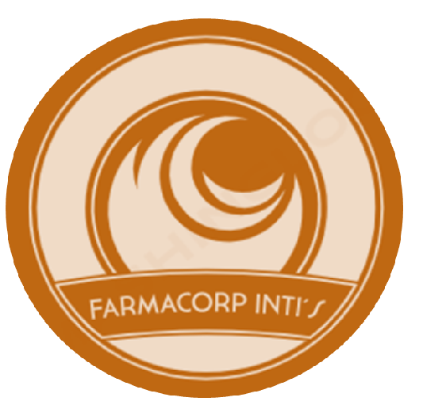

¿Qué es Farmacorp Inti's?
Farmacorp Inti's es una microempresa que fue fundada con el objetivo de cumplir las expectativas del consumidor, aprender sobre el manejo de empresas y demostrar lo que esta nueva generación es capaz de hacer.
Nuestro Producto INMAPH
INMAPH es un serum hidratante 100% natural, que usa como ingredientes bases naranja y zanahoria, estos dos ingredientes bases mezclados con dos aceites naturales logran hacer este increíble serum que contiene las siguientes propiedades:...
- Antioxidantes: Protege la piel del daño ambiental y del envejecimiento prematuro, repara el daño solar y reduce el fotoenvejecimiento.
- Hidratación y Nutrición: Mantiene la piel suave y bien hidratada, mejora la elasticidad y firmeza de la piel.
- Rejuvenecimiento: Estimula la producción de colágeno, reduciendo arrugas y líneas finas.
- Mejora del Tono de la Piel: Aclara manchas oscuras y unifica el tono de la piel.
- Propiedades Anti-Inflamatorias y Antibacterianas: Calma la piel irritada y ayuda a prevenir infecciones y acné.
- Protección Solar Natural: Proporciona leve protección contra daños UV, aunque no sustituye el protector solar.
Estas sorprendentes propiedades de este serum, son las que hacen que INMAPH no sea solo un serum hidratante, sino que sea capaz de ayudar a combatir problemas cutáneos, tales como:
- Daño solar y fotoenvejecimiento
- Hiperpigmentación y manchas oscuras
- Sequedad y deshidratación
- Envejecimiento prematuro
- Acné y problemas de piel propensa al acné
- Inflamación y enrojecimiento
- Piel sensible y eczema
Considera que nuestro producto no fue creado para sustituir el tratamiento médico, fue creado para ayudarte a tener una mejor forma de vida.
Aquí te dejamos un video sobre la producción de este producto:
Sobre Nosotros
Somos una microempresa boliviana dedicada a la creación de este producto.
Nuestras Redes Sociales
Visítanos por nuestra cuenta de TikTok:
También por Instagram:
.
.
.
.